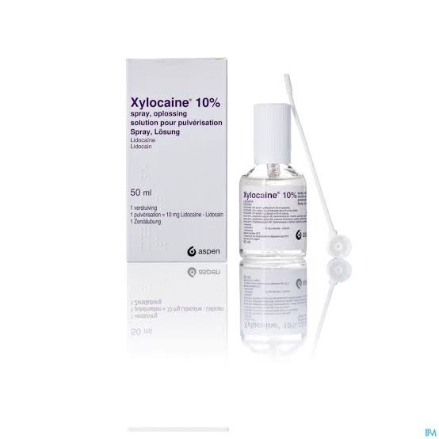
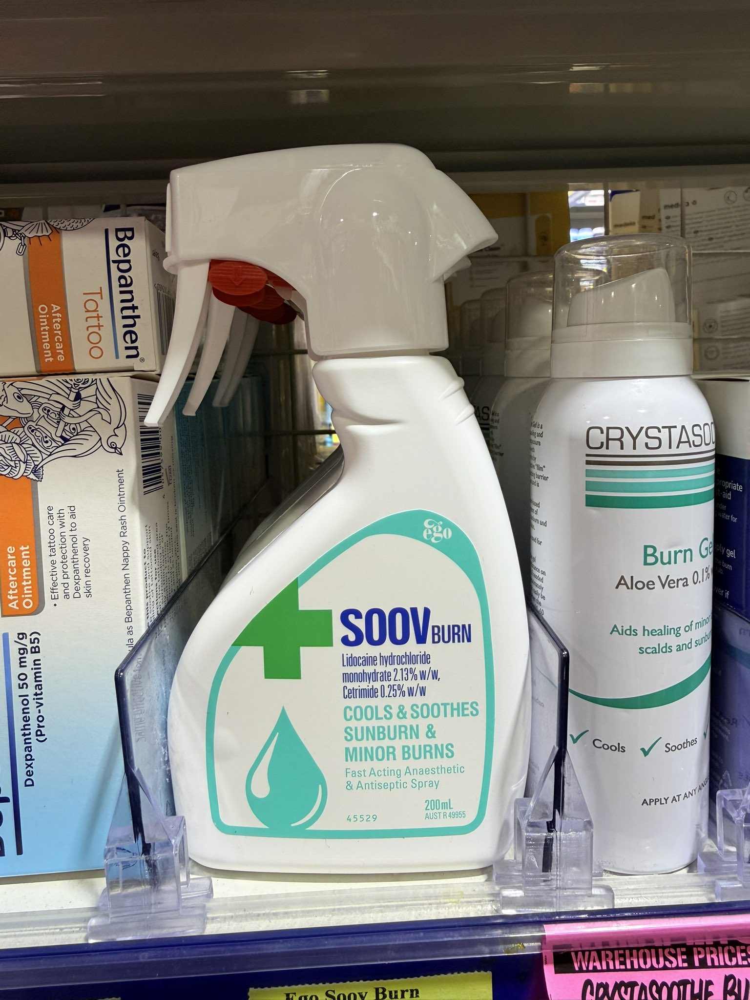

索瑟尔 𝓢𝓸𝓻𝓬𝓮𝓻𝓮𝓻🍥🏳️⚧️
@Sorcerer198964
@TheCyclist400 注射液里没标明有肾上腺素，但是加了肾上腺素的麻醉和手术效果会好很多
所以究竟有没有呢？


Lulu.C
@TheCyclist400
偶尔掉落的邪修经验包…
利多卡因大部分以凝胶或者软膏在药房出售…凝胶或许对扩张有作用，麻醉并润滑，但外用很不舒服，软膏更是…
所以ENT用的利多卡因Spray其实是非常合适再用，止痛的…5%有一定的效果，10%的应该挺麻的…而且，这玩意的是水基…但是这玩意不是很容易得到… https://t.co/ZT5mainrYv